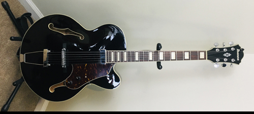
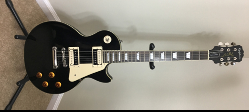
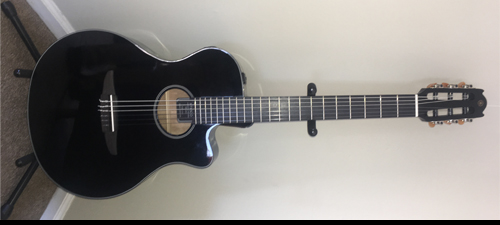
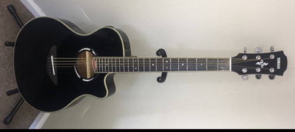
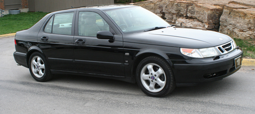

Family
I am grateful to God for my family. They are my greatest treasures on earth. My wonderful bride of 36 years and our four gifted children have blessed me from head to toe. This is why my passion is to help children, youth and families.
-
Mission
I am a spiritual child of Father God above, pursuing Him each moment in worshipful love.
I am a man striving for integrity true, respect, responsibility and righteousness my internal glue
I am the husband of Trudy, my wife, loving, serving faithful for the rest of my life.
I am the father of one daughter, three sons, caring and sharing daily with each one.
I am a servant in service to others, building and rebuilding families and brothers.
Top of Page
My Story

Almost three decades ago I was standing in Centinela hospital in Inglewood, California when a nurse handed me my first child, a son. I was a new father. As I held him and stared into his face, I can remember smiling so much that my face began to hurt. And then it hit me, as I panicked for a moment as I thought to myself, “Is that nurse going to give me some information so I know what to do with my baby son?” I needed help but for better or worse, I did not ask her or anyone else for it. That day I began my adventurous journey as a father of three sons and a daughter who are my greatest treasures on earth.
I grew up with my father, mother and five siblings in the racially and ethnically diverse city of Junction City, Kansas in a household that by federal guidelines was declared poor. My African American father was retired from the army and worked a low wage job. My mother was from Korea and suffered trauma from the war and was hospitalized many times during my childhood for a mental disorder. But while we had many hardship and challenges, we did have a father and mother who loved us the best they knew how. We lived in a neighborhood where most households did not have the fortune of both parents but had fathers that were “MIA” (Missing in Action). Most of the outcomes for the children who were my neighborhood friends, to my dismay, did not turn out well.
The outcomes for my siblings and I who did have a father and mother turned out well. My mother was illiterate and I never heard about my father’s graduation from high school but all the siblings are first generation college graduates with six bachelor degrees, seven master degrees, and three Ph.Ds.. My brothers excelled in science and engineering. The oldest, Robert earned a doctorate in electrical engineering. He is a former DARPA program manager, director of the Air Force Research Laboratory’s Discovery Lab and the 2013 American Institute of Aeronautics and Astronautics (AIAA) “Engineer of the Year”. The second is Morgan with two master degrees from MIT in aeroastro engineering and mathematics. As a Boeing innovator he was awarded Boeing’s “Special Invention Award” for his research in Fluid Flow Modeling Systems and Device Interchanging Capability. And the third is Andrew who was the first African American to graduate from the University of Kansas with a doctorate in Electrical Engineering. He is the John P. Raynor, S.J., Distinguished Chair and Director of the Humanoid Engineering and Intelligent Robotics Lab Engineering at Marquette University. He was recognized by Black Money magazine as one of the “50 Most Important African Americans in Technology” in 2010, 2011, 2012. All these accomplishments are tied to a father who was a strong supporter of education and avid reader, especially of Popular Science and Popular Mechanics magazines.
I graduated from Kansas State University with a bachelor of science in computer science, married my college sweetheart, and worked in that field for 13 years mostly in diverse Southern California. I remember attending a Promise Keepers rally and receiving the Today’s Father magazine from the National Center for Fathering. I was amazed that there was an organization for the specific purpose of inspiring and equipping men to be better fathers. I was finally getting the information I needed, but as a new father I did not ask. About four years after that conference I was invited by my brother-in-law, Dr. Bernard Franklin to join the organization to help him work with urban men. One year after I joined him, he left to start a church. I stayed on and began a new adventure of helping men to be the fathers their children need, giving them the help they needed but rarely requested. I obtained a master’s degree in marriage and family therapy at Friends University to study theory that could guide my work with fathers.
Over the next decade through work at the National Center I have had opportunities that I never imagined I would experience working in the fatherhood field. I have spoken at state and national conferences, written for and appeared in national magazines, trained trainers across the country, appeared on a national news network, been a reoccurring guest on a talk show, held workshops for a professional football team, testified as an expert witness before a Senate subcommittee, authored curricula, became a contributing author for an anthology on fatherhood, and visited the first Lady’s White House conference and reception in 2007. Of all these experiences what I value the most is the exchanges that took place in working with small groups of men from very challenging situations whose passion for their children could inspire us all to be better fathers. I thought I was helping men become better father when in reality they were helping me much of the time.
My passion for working with fathers is driven by wanting the best for children. And my reason for pursuing of a doctorate in family studies was to develop expertise in research methodology, family theory, and the practice of providing educational and preventative services for fathers and families. It is my desire to become a uniquely qualified professional with expertise in creating, providing, and evaluating effective services for men to be the fathers their children need.
Top of Page
Interests: Guitars
-
Ibanez AF71F
One of my favorite music styles is jazz, although I am not a purist. I enjoy the distinct tones of various jazz guitarists like George Benson, Johnathan Butler, Norman Brown and the late Ronny Jordan. I wanted to purchase a guitar that could produce any of those sounds at an affordable price. Unfortunately you have to play well also. This was the hollow-body guitar I was looking for.
AF models belong to the Artcore series and are among the most prominent models of the entire Artcore range. AF models are vintage-styled jazz boxes with classic single-cut design, 20-fret fingerboards, arched backs and tops and short 24-3/4" scales. Also, these models often come with wooden bridges and passive electronics. AF71F is one of new models introduced at the 2014 NAMM in Anaheim, Ca. It rocks an all-maple body and a mahogany neck. Body is made of maple laminates to give extra spring to already snappy tone. Minibucker in the neck provides a balanced tone, perfect for Jazz, blues and similar styles. It is controlled through a master volume and master tone knob (it acts as bass/treble boost/cut). Bridge section is fit with a classic ART-1 bridge and a trapezoid tailpiece in the back. Neck is also made for players who love the old jazz boxes. It rocks the Artcore contour in the back and is topped with a 20-fret rosewood fingerboard. Fingerboard is bound and features the plain block inlays.
Ephiphone Les Paul Traditional Pro II
The Les Paul model is one of the standards for solid body guitars. I had one years ago and was looking for another. Although I had found a much better sounding and playing one I opted for this model because of the ability to split the coils for the pickups.
Epiphone introduces the new Les Paul Traditional PRO-II featuring the ultimate combo of Alnico Classic PRO and ProBucker humbuckers with coil-splitting for an incredible range of tones. Plus a 15 dB boost switch along with new color finishes. The new Les Paul Traditional PRO-II has the classic build and profile of all Les Pauls with a solid mahogany body and a traditional carved top. The solid mahogany neck has a 1960's SlimTaper “D” profile with a 24.75 in. scale and is hand-fitted and glued into the body so the entire guitar resonates as a single piece of wood. A "worn" type finish on the back of the neck and body add to the lived-in feel. The neck has a rosewood fingerboard with 22 medium jumbo frets, single-ply cream binding, and mother-of-pearl trapezoid inlays.
Yamaha NTX500
I enjoy the playability and gorgeous tones of nylon string guitars. My favorite artists are Peter White, Marc Antone and of course Earl Klugh. Another reason I enjoy nylon strings is because of my finger picking playing style. This is a high quality, well built, good sounding instrument both plugged and unplugged, for a very reasonable price. I enjoy using this instrument for personal worship time with God.
The NTX 500 model is made primarily for the stage and recording purposes, aiming at contemporary jazz, rock, latin players who need a nylon-stringed guitar to add flavor to their performances/recordings. Due to its affiliation with the NTX branch, it has a modern cutaway body (modernized classical body based on the APX design, with nato back/sides and solid spruce top), 12th fret neck joint, Yamahas own electronics (under-saddle pickup and shoulder-mounted preamp), stock hardware. Includes a nato neck (smooth finish, 3+3 headstock), 22-fret rosewood fingerboard (1-7/8" nut, 25-9/16" scale, side dot inlays), rosewood bridge, and classical tuners.
Yamaha APX500 III
There is nothing like a good sounding steel string acoustic. When looking for low cost model, I returned to my roots. I owned a APX500 years ago and found it to be a good sounding guitar both plugged and unplugged. If could have saved a lot of money if I started and stayed with this four guitars years ago.
The third generation of Yamaha`s APX500 is so much more than mere update. APX500 III aims to keep the 500 series on the throne of the lower intermediate class. Single-cut APX body is now made of nato and spruce (nato on the sides and in the back, with the spruce sound board on top), and has the standard thinline contour. Beneath the sound board, Yamaha opts for the standard X bracing pattern, while the top is fit with a fixed rosewood bridge. Underneath the saddle of the bridge, Yamaha installs a piezo pickup. Side-mounted preamp (three-band equalizer and an on-board tuner) completes the renovated System 66 electronics pack. Nato neck is attached at the 14th fret and features the standard 20-fret rosewood fingerboard on top.
Top of Page
Interests: Cars
-
1989 SAAB 900

Out of all the cars I have owned this is my all time favorite. SAAB stands for Scandinavia Automobiles Airplanes and Boats. I found this model to be a cooly designed, well built, high performing (185hp) and fun to drive car. I drove it till it could not be driven any more.
The 900 utilized a deeply curved front windshield, providing the best driver visibility, calling attention to the marque's aircraft legacy. Also underscoring their aircraft lineage, the 900's dashboard was curved to enable easy reach of all controls and featured gauges lit up from the front. Saab engineers placed all controls and gauges in the dashboard according to their frequency of use and/or importance so that the driver need only divert his gaze from the road for the shortest possible time and by the smallest angle. This is why, for example, the oft-used radio is placed so high in the dashboard. In keeping with the paradigm of its predecessor, the 99 model, the 900 employed a door design unique in automotive manufacturing, with an undercutting sweep to meet the undercarriage, forming a tight, solid unit when the door was closed.
2000 SAAB 9-3

While initally trying to find another 900 I became familiar with the SAAB 9-3 Viggen. The car is named after the SAAB Viggen fighter jet and with a 230 hp this car can fly on the highway. This car is plain fun to drive and has become my second favorite of all time car.
The Saab 9-3 Viggens were only made from 1999-2002 and were only available with a standard transmission, and limited colors (just blue in 1999, with silver and black added in 2000, other colors like red later). They started off with a standard 9-3, but put in a better engine from the 9-5, a larger turbo-charger, better computer, improved stiffer and lower suspension (springs, dampers, anti-roll bars and steering rack mounts), better 17" wheels, sportier and more aerodynamic trim (reducing aerodynamic drag by 8% to a 0.31 coefficient and reducing lift forces over the rear wheels by 60%), larger and grooved rotors, different spoiler, upgraded clutch assembly, larger diameter and stronger driveshafts and strengthened CV joints, improved seats, amongst other changes.
Less than 3000 Viggens total were made in 2000, with only about 800 total imported into the USA. My silver 2000 4-door (well, they really call it "5-door") non-convertible is one of only 400 imported into the USA. Performance wise they were design to beat the BMW M3 but failed. It can go from 0-60 in 6.5 seconds and do the quarter mile in 15 seconds flat.
2001 SAAB 9-5 SE
This was a excellent car with the nicest stock car stereo that I've ever heard. The major problem with this car is that it had a six cylinder engine that made repairs more difficult and costly. Alast, they don't make SAABs anymore.
Perhaps the nicest thing about the Saab 9-5 SE is its sporting character, with precise steering and powerful brakes that enhance the driving experience. Even in base form, the 9-5's high level of standard equipment and low-30s sticker price make it a bargain for most people shopping the near-luxury class. But because the 9-5 is a Saab, this car looks and feels a bit different. The SE version is packed with amenities and is powered by a 3.0-liter turbo V6 that requires a driver-selectable four-speed automatic. The V6 makes 200 ponies and 229 foot-pounds of torque from 2,500 rpm through the 4,000-rpm mark.
The 9-5's standard equipment list is long, offering antilock brakes, automatic climate controls, premium stereo, side-impact airbags, an active head-restraint system, traction control and a sunroof. Heated front and rear seats are optional, but Saab's cool ventilated front seats and a 200-watt stereo/CD/cassette come standard on the SE.